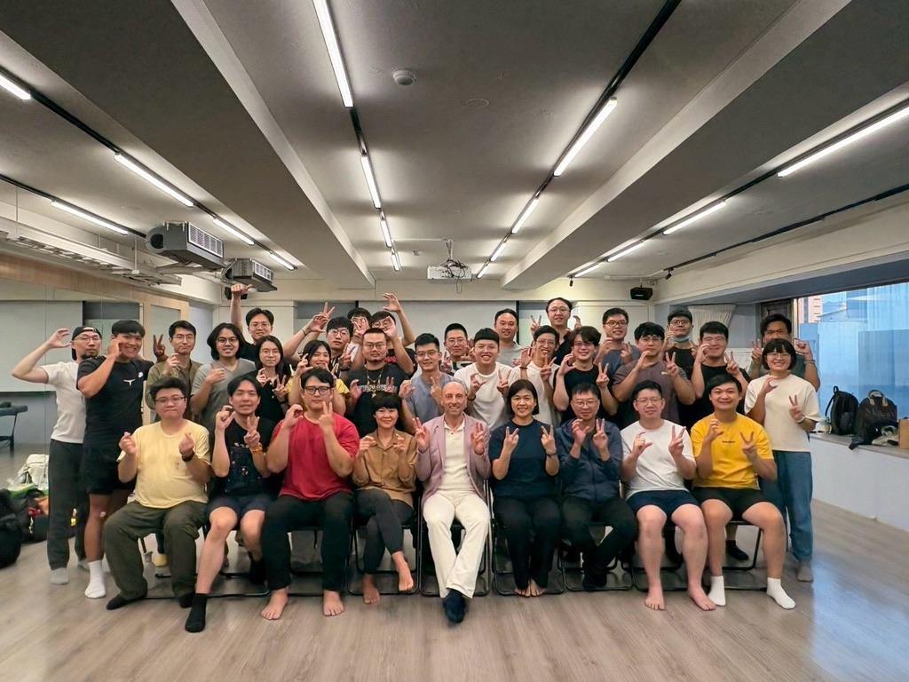
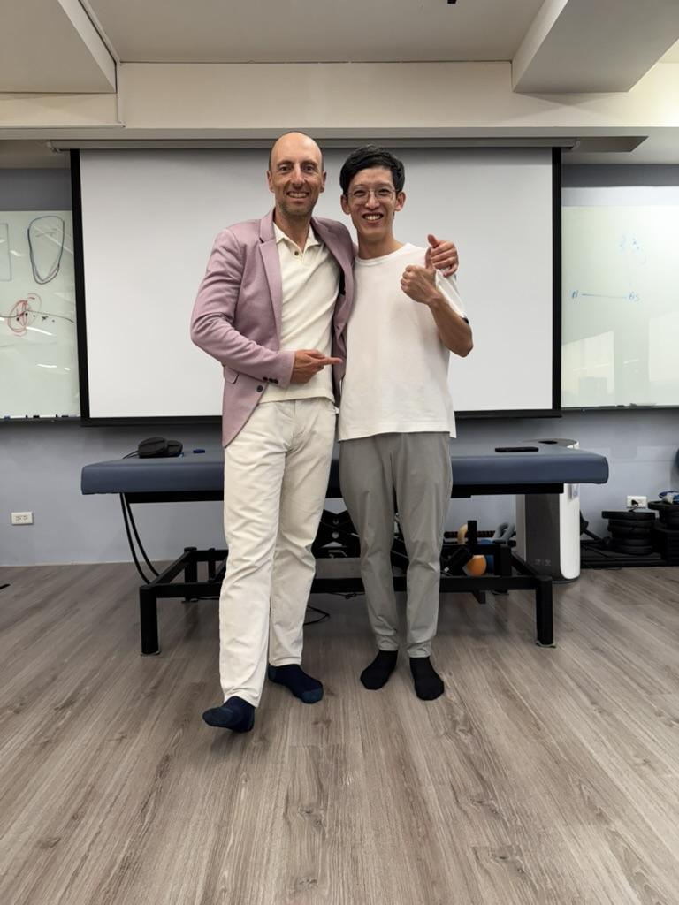

近乎崩潰差點蓋牌的中秋連假： PAK Level 3 腦力極限挑戰
【近乎崩潰差點蓋牌的中秋連假： PAK Level 3 腦力極限挑戰】
明明只是三天的中秋連假課程，下課瞬間卻覺得像經歷了一整週的「Super Brainstorm」，大腦強制運轉到靈魂彷彿被抽乾，累到可以直接秒睡。
對於時常在進修、接觸新學派與新技術的我來說，課堂上受挫或聽不懂其實是家常便飯。為了擴大自己的「臨床射擊範圍」，即便內容再艱澀，我也從未有過放棄的念頭。
但這次的 PAK Level 3，卻讓我迎來了臨床進修多年來，第一次強烈想要「直接蓋牌不玩了」的瞬間。
▍第一天的震撼教育：信心碎滿地的正午
或許是因為 Level 3 探討的「顱骨領域診斷與處置」本身就極為複雜，加上我腦中對於前兩個階段的內容尚未完全整合；又或許是 Trevor 老師一開場就採用「直球對決」的提問與討論，直接檢視大家對前兩階段的掌握度。
第一天早上的高強度轟炸，直接把我逼到近乎崩潰。到了中午放飯時間，我腦中甚至浮現極度強烈的念頭：好想直接背起書包回家、好好放個中秋連假。
▍從火坑爬起：在實作與問答中重組邏輯
所幸，第一天下午課程繼續推進時，開始抓到了一點脈絡，加上實際操作在隔壁夥伴身上時，明確觀察到了身體的變化，似乎被擊碎的信念才慢慢一片片拼湊起來。
第二天，大腦近乎全功率運轉，總算勉強跟上整天的節奏；到了第三天，面對顳顎關節（TMJ）、下肢與足弓的整合應用，雖然下課後已經徹底放空累癱，但神奇的是——透過 Trevor 老師這種一問一答的推進方式，竟然在不知不覺中，將 Level 1 到 Level 3 的內容在腦海裡串聯起來了，也終於跟上了整套 PAK 的臨床思路與操作節奏。
因為第四階段即將迎來術科考試，今天下課前，老師特別演示了「Pre-test」的模擬測驗。重拾狀態的我，為了確認這三天在腦中重組的邏輯是否正確，就傻乎乎地上台給老師「烤」了一下。
最終，我帶著滿滿的踏實感與喜悅和老師合照，心滿意足地離開教室，甚至開始期待起第四階段的生化內容。
▍跳脫純結構思維：什麼是 PAK（專業應用肌動學）？
簡單來說，人體無論是靜態的姿勢呈現，或是動態的運動表現，最終都是「整套神經系統」運作的結果。
神經系統的運作包含三個核心環節：訊息輸入（感覺） ➔ 中樞整合 ➔ 訊息輸出（運動）。
每個人對於外界刺激與訊息的接收，經過大腦整合後，都會產生各自特有的神經回應模式（Pattern）。
而 PAK，就是一套針對人體神經系統的精密檢測工具：
核心檢測標的（fMMT）： 透過功能性徒手肌力測試，我們測量的並非單純的肌肉力量，而是監測肌肉對於外界刺激的「適應能力」，藉此評估神經系統究竟在哪個環節出了問題。
五大領域工具箱（Toolbox）： 透過系統化的評估與排除，精準鎖定問題所在的領域。
重塑神經統合： 最後運用對應的介入方式，去調整這個異常的「感覺輸入與運動輸出」統合表現。
對於習慣從解剖學、肌動學與生物力學出發的我而言，PAK 提供了一套截然不同、卻能高度互補的「掃描性神經診斷系統」，在臨床現場會是非常強大的掃描工具。
▍課後感想
這三天幾近崩潰、又再次從火坑裡爬起來的過程，實質上逼著我直面了先前沒有徹底搞懂的核心關卡。
PAK 其實跟中醫的價值觀非常接近，PAK 也認為人體必須通盤性考量，跟中醫強調的內、針、傷整合性全人醫療是一致的，各自透過各自的語言邏輯從不同的方向在闡釋、演示同一件事情。期待在未來若更能掌握 PAK 後，能在中醫本業中找到能互補、能相輔相成的整合運用。
真心感謝 Trevor 老師在課堂上拉了我一把，讓我從原本差點放棄的邊緣，重新找回了對這門學問更深一層的好奇與求知熱情。聽說 Level 4 講物質、生化、內分泌、血液等領域對人體的影響，讓我繼續崩潰吧！
#PAK應用肌動學Level3

